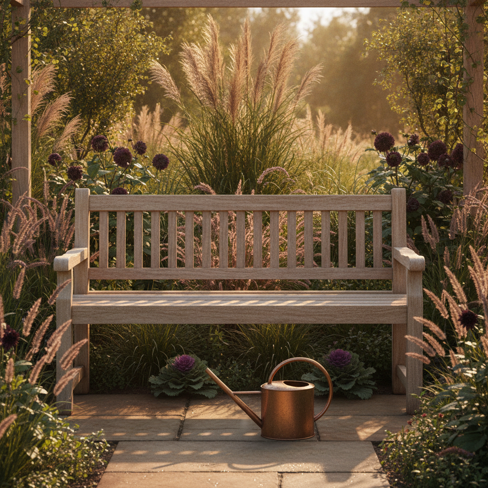
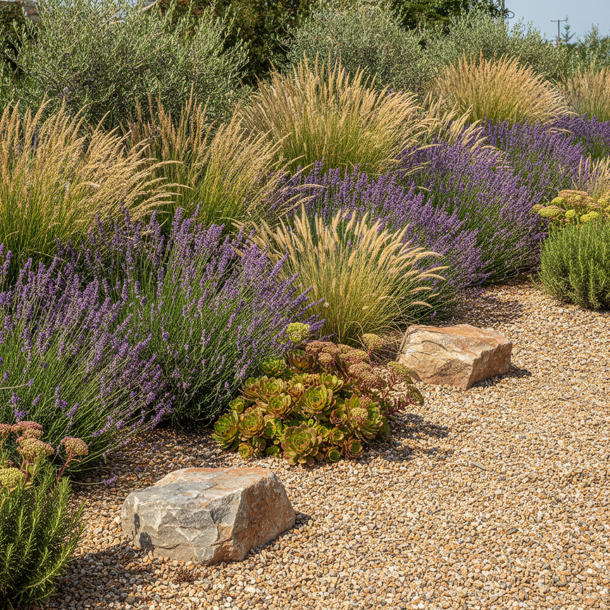
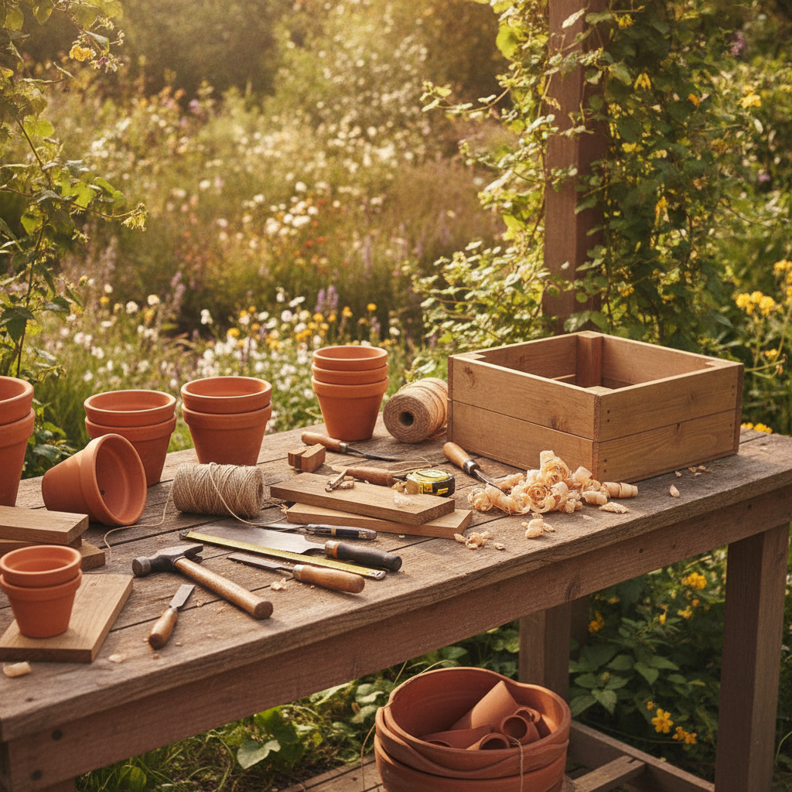
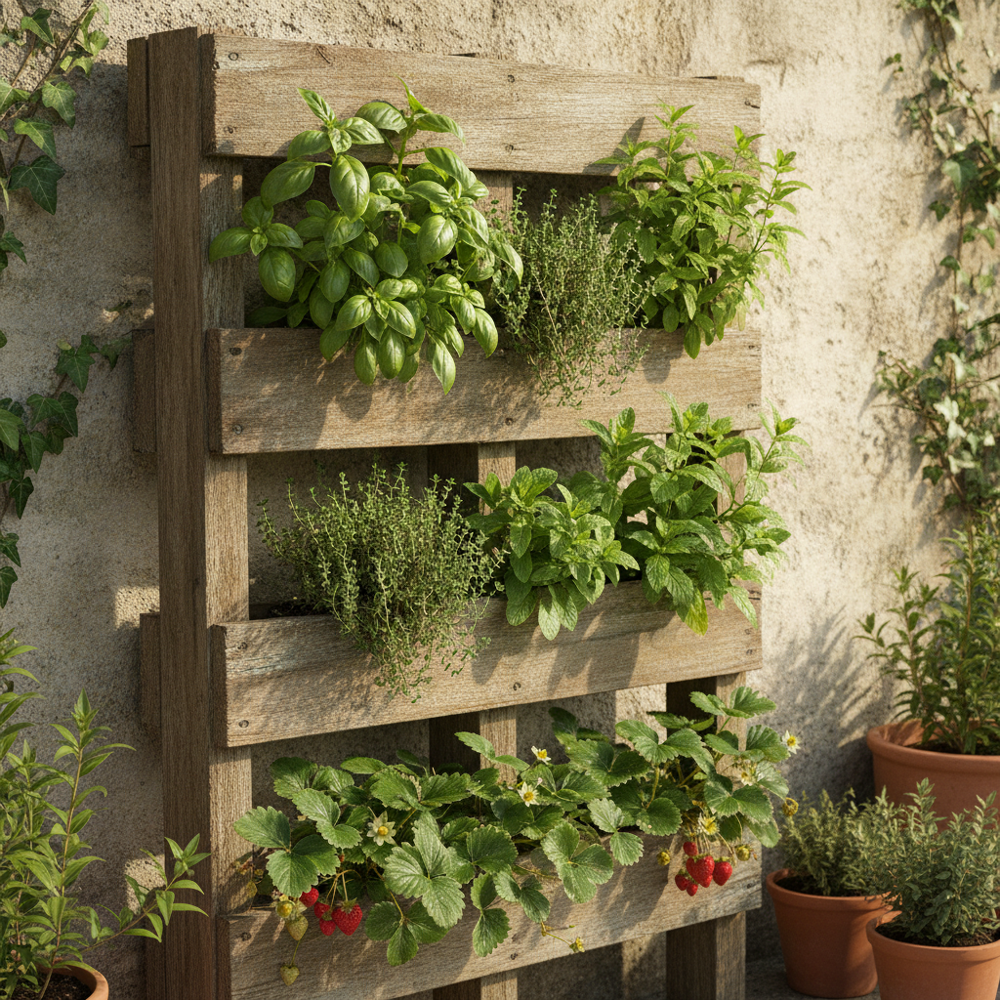
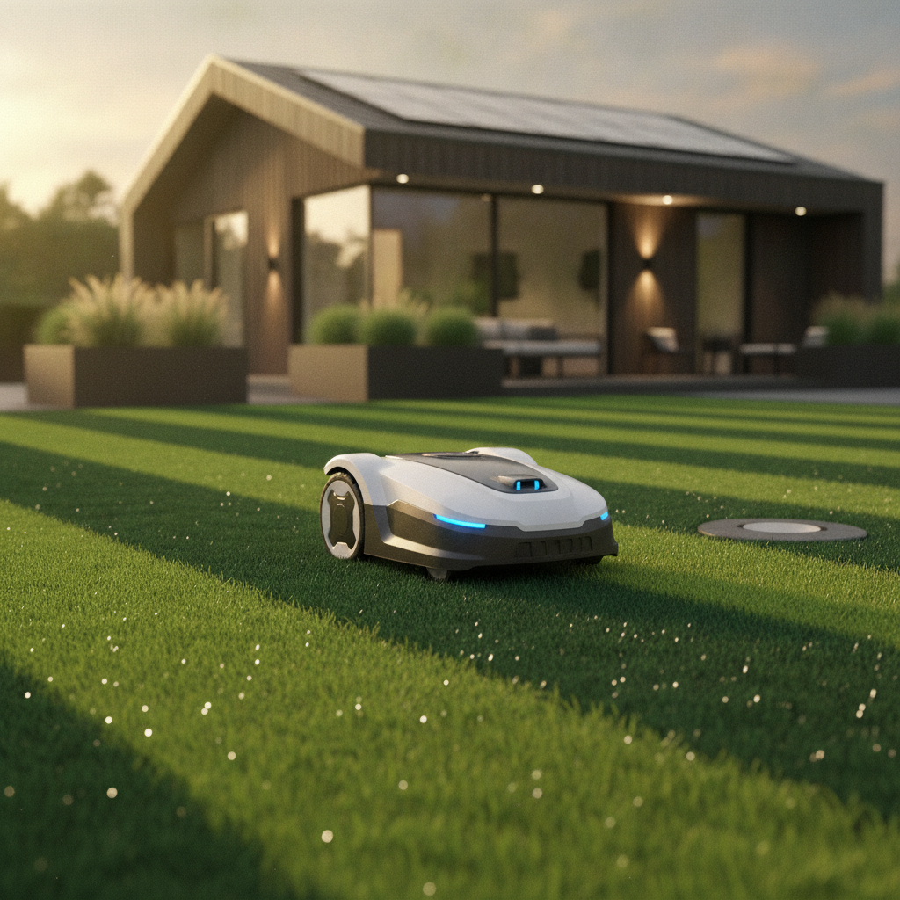

Design-Entwürfe — wähl deine Richtung
Vier Startseiten-Varianten, die neue Kategorieseite und die überarbeitete Produktseite. Alles mit echten primlio-Daten, Bildern und Farben.

Startseite — finale Richtung
Kräftige Farbe (V4) + Bild-Fokus/Mosaik (V2) + saubere Karten (V1). Neuer Karten-Flow: pro Karte „Auf Amazon →" oder „Details & Ratgeber".
Ansehen →
Kategorieseite — finale Linie
Gleiche Farbwelt; Mobil-Filter gefixt (sauberes „Filter & Sortieren"-Sheet statt Button-Chaos); Karten mit Entweder/Oder-Flow.
Ansehen →
Produktseite — CTA überall
Sticky Amazon-Button mobil + CTA-Wiederholung nach Pro/Kontra & FAQ — nie mehr hochscrollen. Plus finale Farbwelt.
Ansehen →Verfeinert (Basis)
Die vertraute editoriale Richtung — poliert: Suchleisten-Fix, „Pick der Woche" mit Bild, ruhig & hochwertig. Der sichere Referenz-Look.
Ansehen →
Visual-First / Bold
Bild-getrieben: großes Full-Bleed-Hero, immersives Bento-/Mosaik-Layout, weniger Text, mehr Stimmung. Magazin-/Lifestyle-Gefühl.
Ansehen →
Deal- & kompakt-orientiert
idealo-Stil: dominante Suche, „Aktuelle Angebote"-Schiene oben, dichte Raster, viel oberhalb der Falz. Zeigt das Deals-Thema prominent.
Ansehen →Mutige Marke (Farbe)
Gleiches Layout, aber Aubergine/Terrakotta kräftig: vollflächige Farbbänder, Akzentflächen. Markant & selbstbewusst statt zurückhaltend.
Ansehen →Kategorieseite
Garten-Deko im neuen Stil: Hero, Sortier-/Filter-Konzept, Ratgeber-Teaser, Deals-Vorschau, Top-10 mit Rang-Badges. Glattgezogen auf die neue Linie.
Ansehen →Produktseite
Kurztitel als H1, Galerie, Pro/Kontra, FAQ — jetzt mit Fly-in unten links (einklappbar) statt Bottom-Bar + Buttons auf den Alternativen-Karten.
Ansehen →
Ratgeber-Übersicht
Alle 14 Ratgeber mit Format-Badges (Vergleich/Anwendung/Entscheidung), Filter-Popover + „Bald"-Teaser für News & DIY.
Ansehen →
Ratgeber-Detail (Vergleich)
Hochbeet-Vergleich: Kurz-Fazit, Vergleichstabelle, „Welches passt zu dir?", redaktionelle Abschnitte, FAQ, Picks.
Ansehen →
News & Trends — Übersicht
Recherchierte Trends, akute Probleme, Neuheiten & Updates je Bereich — später teils KI-gestützt. Mit Typ-Filter (Trend/Problem/Neuheit/Update).
Ansehen →
News-Artikel (Beispiel)
„Trockenheit 2026" — Trend-Artikel mit redaktionellem Teil, Produktempfehlungen, „neueste Produkte" und Ratgeber-Verweis.
Ansehen →
DIY-Projekte & Hacks — Übersicht
Schritt-für-Schritt-Anleitungen mit Schwierigkeit/Dauer-Filter — jede mit Materialliste + passenden Produkten (Affiliate-Hebel).
Ansehen →
DIY-Projekt (Beispiel)
„Vertikales Kräuterbeet aus einer Palette" — Materialliste über mehrere Produkte + 6-Schritt-Anleitung + Tipps.
Ansehen →Bilder dieser Konzeptseiten sind frisch via Gemini Flash generiert (Platzhalter zur Veranschaulichung).
Im Kern die Startseiten-Shell, pro User-Intent neu priorisiert. Oben auf jeder Seite ein Intent-Switcher (Angebote · Bestenlisten · Ratgeber · Problem).

Garten — Angebote
Deal-forward: „Aktuelle Angebote"-Sektion oben + Top-Preis-Leistung. Conversion-Fokus.
Ansehen →Garten — Bestenlisten
Neutral/Autorität: „Wie wir auswählen" + Bestenlisten je Bereich mit Rang-Badges.
Ansehen →Garten — Ratgeber-Hub
Wissen & Problemlösung: Problem-Quick-Links + alle Ratgeber + DIY-Teaser.
Ansehen →Monogramm „p" — verfeinert
Klar lesbares „p" (Stamm links + Bauch oben rechts) in mehreren Varianten, hell/dunkel + Favicon. Dein Favorit, neu gemacht.
Ansehen →Logo — alle 6 Konzepte
Monogramm · Siegel · Funke · Bogen · Duo-Form · Wortmarke — je Bild-/Wortmarke, SVG.
Ansehen →- Suchleiste im Desktop-Menü auf saubere Höhe gebracht (dein Hinweis).
- Mobile-Hamburger-Menü ergänzt (vorher gefehlt).
- Deals-/Special-Angebote-Konzept eingebaut — als „Vorschau/Bald" gelabelt, auf Startseite & Kategorie.
- „Pick der Woche" mit Bild als visueller Anker im Hero (statt rein textlich).
- „Geprüft"-Daten variiert statt überall identisch (wirkte templated).
- Kategorieseite glattgezogen auf die neue Linie — Startseite ↔ Kategorie ↔ Produkt einheitlich.